Алгоритм заполнения общего журнала работ с первого раза
Требование вести общий журнал работ обязательно для любой строительной организации. Журнал, который вы научитесь оформлять по нашему алгоритму, позволит вам в будущем успешно пройти проверки надзорных органов и сдать объект заказчику в срок. В уроке вы узнаете, когда нужно обязательно регистрировать журнал, и как с первого раза заполнить все сложные графы.

Что такое общий журнал работ (ОЖР)
Общий журнал работ (ОЖР) — основной первичный производственный документ. Весь проект в нем фиксируют все работы на стройке, материалы, испытания, условия производства работ, сведения о строительном контроле.
Кто и как заполняет ОЖР
Записи в ОЖР вносят только уполномоченные представители участников строительства. Каждый в свой раздел. Например, в раздел 3 записи вносит уполномоченный представитель лица, осуществляющего строительство; в раздел 4 – уполномоченный представитель заказчика, отвечающего за строительный контроль. На практике записи в раздел 3 может вносить специалист, который готовит исполнительную документацию. Но подписывать данные записи все равно должен уполномоченный представитель лица, осуществляющего строительство.
Как вести ОЖР, прописано в приказе Минстроя от 02.12.2022 № 1026/пр. Согласно ему ОЖР можно вести на бумаге или в электронной форме без дублирования на бумажном носителе.
Электронная форма — это не журнал, который ведется в формате DOC или XLS
Общий журнал в электронной форме формируют и представляют в виде файлов в формате XML с помощью специализированного программного обеспечения. Записи в электронном ОЖР подписывают усиленной неквалифицированной электронной подписью.
Этапы оформления ОЖР
Назначьте ответственного. Выберите сотрудника, который будет вести журнал. Обычно этим занимается прораб или инженер ПТО.
Подготовьте бланк журнала. Если ведете на бумажном носителе, оформите журнал по установленным формам. Бланк ОЖР купите в специализированных магазинах или сделайте сами, как требуют в приказе Минстроя от 02.12.2022 № 1026/пр. Теперь журнал необязательно должен быть типографского выпуска, как требовали раньше в РД 11.05.2007. Сегодня вы можете распечатать его сами.
Перед покупкой типографского бланка тщательно сверьте его содержание с утвержденной формой
Следите, чтобы бланк соответствовал официальному образцу. Часто в магазинах продают неактуальную форму ОЖР.
Продумайте брошюровку и нумерацию. Если журнал бумажный, пронумеруйте, прошейте и скрепите страницы печатью.
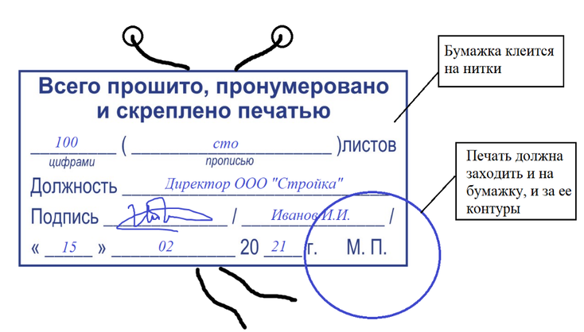
Заполните титульный лист. Титульные листы идут до раздела 1.
Передайте журнал на регистрацию, если это необходимо. Журналы необходимо регистрировать в органах госстройнадзора, если на объекте производился такой надзор. Это возможно в двух случаях (ст. 54 ГрК).
При строительстве ОКС — их проектная документация подлежит экспертизе согласно статье 49 ГрК. Исключения прописаны в части 3.3 статьи 49 ГрК.
Если реконструируют ОКС и работают с объектами культурного наследия и затрагивают их конструктивные и другие характеристики надежности и безопасности. Также если документы на реконструкцию ОКС, в том числе указанные работы по сохранению объектов культурного наследия, подлежат экспертизе по статье 49 ГрК. Исключения прописаны в части 3.3 статьи 49 ГрК.
За семь рабочих дней до стройки застройщик или техзаказчик должны направить в уполномоченные органы исполнительной власти извещение о начале работ. К нему прикладывают документы и общий журнал работ (ст. 52 ч. 5 ГрК).
Если журнал на бумажном носителе, передавайте его сброшюрованным, пронумерованным, с заполненными титульными листами. В соответствии с приказом Минстроя № 1026/пр орган госстройнадзора скрепляет журнал печатью, проставляет регистрационную надпись и возвращает его застройщику или техзаказчику.
Если журнал электронный, создает регистрационную запись в общем журнале и указывает уникальный регистрационный номер общего журнала. Подтверждает ее усиленной неквалифицированной электронной подписью или усиленной квалифицированной электронной подписью.
Если ОЖР закончился или в ходе работ с бумажного перешли на электронный, то в орган госстройнадзора предоставляйте новый ОЖР. Его зарегистрируют с пометкой о порядковом номере. После регистрации журналу присваивают уникальный номер и ставят запись инспекции. Теперь его можно использовать на объекте.
Ведите ОЖР все время, пока идет работа. Журнал заполняют со старта работ, включая период подготовки, до даты фактического завершения работ. Бумажный журнал хранят на объекте. Его часто требуют на строительном контроле. Записи положено вносить день в день. В бумажный ОЖР — вручную, при электронной форме — записи подписывают усиленной неквалифицированной электронной подписью.
В бумажном журнале изменяемую запись зачеркивают одной чертой так, чтобы было видно зачеркнутое. Под этим вносят новую надпись, и рядом ее подписывает уполномоченное лицо. Также указывают дату и причины изменений. Например, «исправленному верить, Иванов И.И., подпись, 12.05.2024, была допущена опечатка».
В электронный журнал исправления вносят так. Создают новую версию записи. Подписывают усиленной неквалифицированной электронной подписью или усиленной квалифицированной электронной подписью уполномоченного лица. При этом старую запись нужно сохранить. Когда работа закончена, заказчик вносит отметку об этом в журнал.
Урок большой, поэтому давайте закрепим материал первой части урока в нашем интерактивном тренажере.
Встроенное упражнение — сохранен текст
Статическое представление
Flipcard
Текстовые фрагменты упражнения извлечены с исходной встроенной страницы. Проверка ответов и анимация здесь не работают.
- Новая статья WEB АРМ
- Общий журнал работ (ОЖР) — вторичный производственный документ
- Общий журнал работ (ОЖР) — основной первичный производственный документ
- Следующий вопрос
- Журналы необходимо регистрировать в органах госстройнадзора, если на объекте производился такой надзор
- Журналы необходимо регистрировать в органах госстройнадзора, если на объекте производился такой надзор.
- Общий журнал в электронной форме формируют и представляют в виде файлов в формате xml с помощью специализированного программного обеспечения
Можно ли на одном объекте вести несколько ОЖР
Да, можно.
На объекте может быть несколько журналов, если:
- один журнал закончился и завели новый;
- в состав сложного объекта или предприятия входят несколько ОКС – на каждый можно вести свой ОЖР;
- на каждый этап строительства или реконструкции ведется свой журнал. (Приказ от 02.12.2022 № 1026/пр.)
В постановлении Правительства от 05.03.2007 № 145 есть три разных определения этапа строительства:
- Строительство или реконструкция ОКС из числа ОКС, которые планируют строить или реконструировать на одном участке, если такой объект может быть введен в эксплуатацию автономно.
- Строительство или реконструкция части ОКС, которая может быть введена в эксплуатацию автономно.
- Комплекс работ по подготовке территории строительства, который включает оформление прав владения и пользования участками, снос зданий, строений и сооружений, переустройство, перенос инженерных коммуникаций, строительство временных зданий и сооружений, вырубку леса и другие работы.
На практике каждый подрядчик ведет свой ОЖР. Также часто на каждый раздел рабочей документации (РД) ведут свой ОЖР. Но не всегда, например, раздел РД можно назвать отдельным этапом строительства.
Вести отдельно ОЖР на каждый раздел РД по требованиям приказа Минстроя неверно. Так, надзорный орган может потребовать с вас один ОЖР на объект. Но когда на объекте много субподрядчиков, требуйте, чтобы каждый вел ОЖР по своим видам работ. Как правило, данные журналы не регистрируют. Затем генподрядчик объединяет данные всех субподрядчиков в единый ОЖР, который уже регистрируют.
Как заполнить титульный лист
Титульным листом считаются листы, которые идут до Раздела 1 журнала. Прежде чем приступить к оформлению титульного листа, пронумеруйте ваши журналы. Нумерацию журналов ведут по порядку их выдачи
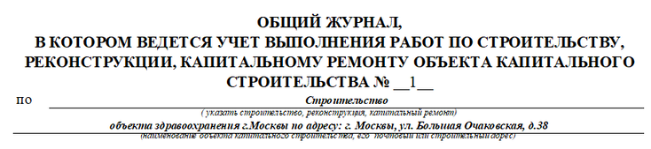
Графа «Застройщик»
Застройщик – это физическое или юридическое лицо, которое обеспечивает строительство, реконструкцию, капитальный ремонт, снос, инженерные изыскания, подготовку проектной документации на принадлежащем ему участке (часть 16 статьи 1 ГрК РФ). Застройщик вправе передать свои функции техническому заказчику. На застройщика выдают и разрешение на строительство.
Как заполнить графу «Застройщик»

Должен ли застройщик состоять в СРО
Должен в определенных случаях.
Застройщик может не состоять в СРО, если в нем состоит технический заказчик, которого привлекли на объект. Представитель застройщика в таком случае не обязан быть членом национального реестра специалистов в области строительства (НРС).
Графа «Технический заказчик»
Техзаказчик — юрлицо, которое организует и управляет строительством от имени застройщика. Он заключает договоры, предоставляет материалы и документы, утверждает проектную документацию (часть 22 статьи 1 ГрК РФ). По сути технический заказчик — это управляющий проектом, который действует от имени застройщика.
Как заполнить графу «Технический заказчик»
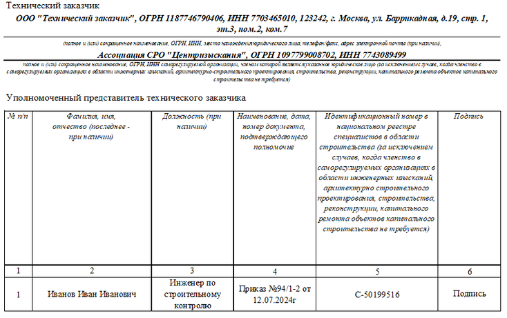
Технический заказчик должен иметь членство СРО в области инженерных изысканий, архитектурно-строительного проектирования и строительства, реконструкции, капитального ремонта, сноса ОКС. Исключения прописаны в части 2.1 статьи 47, части 4.1 статьи 48, частях 2.1 и 2.2 статьи 52, частях 5 и 6 статьи 55.31 ГрК.
Если членство в СРО обязательно, то представитель технического заказчика должен состоять в НРС. Идентификационный номер в НРС записывают в соответствующий столбик. Если техзаказчик может не состоять в СРО, указывать номер в НРС НОСТРОЙ для представителя техзаказчика не нужно.
Технического заказчика может не быть на строительном объекте
Техзаказчика на объекте не будет, если застройщик его не привлекает. В таком случае данные строчки в ОЖР не заполняют.
Материал к уроку (PDF)
Как отличить застройщика от технического заказчика
PDF получен с исходной страницы. Поля для названия организации и других персональных данных оставлены пустыми.
Пример. Как отличить застройщика от техзаказчика
ООО «Промторг» хочет построить торговый центр на собственном участке. Они получили разрешение на строительство. При этом данное общество не член СРО и не может быть техническим заказчиком. Поэтому ООО «Промторг» передает свои полномочия ООО «Строитель».
ООО «Строитель» от лица ООО «Промторг» заключает договоры на проектирование, инженерные изыскания и строительство с другими организациями, а также в дальнейшем будет контролировать все этапы строительства.
В данном случае ООО «Промторг» — застройщик, а ООО «Строитель» — технический заказчик.
Графа «Лицо, ответственное за эксплуатацию здания»
Эту графу заполняют, если сторона договора — лицо, ответственное за эксплуатацию здания, сооружения, или региональный оператор. Если эксплуатирующая организация не является стороной договора подряда, то строки оставляют пустыми.
Как заполнить графу «Лицо, ответственное за эксплуатацию здания»
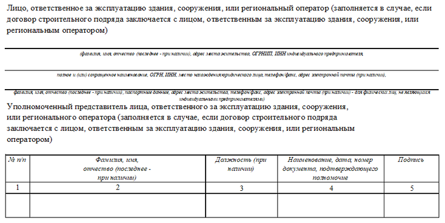
Графа «Разрешение на строительство»
Эту графу заполняют если для строительства объекта необходимо получить разрешение на строительство (ст. 51 ГрК РФ). В остальных случаях строки оставляют пустыми.
Как заполнить графу «Разрешение на строительство»
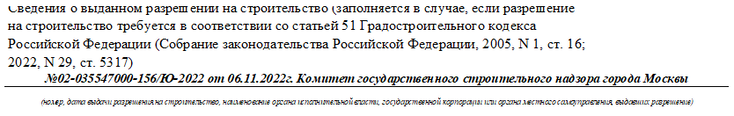
Материал к уроку (PDF)
Выдача разрешения на строительство не требуется для следующих объектов
PDF получен с исходной страницы. Поля для названия организации и других персональных данных оставлены пустыми.
Графа «Лицо, которое готовит проектную документацию»
Укажите наименование и реквизиты проектной организации, СРО в области проектирования, в котором состоит организация (ст. 48 ч. 4, 4.1, 5 ГрК).
Представители лица, которое готовит проектную документацию, — это авторский надзор. Может быть несколько представителей от разных проектных организаций. Например, если разделы проекта готовили разные организации. Также может быть стороннее физическое или юридическое лицо, которое привлек заказчик (СП 246.1325800.2026). Авторского надзора может не быть вовсе.
Авторский надзор осуществляют (СП 246.1325800.2026):
- при строительстве, реконструкции и капитальном ремонте ОКС, включая особо опасные, технически сложные и уникальные объекты;
- при техническом перевооружении, консервации и ликвидации опасных производственных объектов;
- при проведении работ с объектами культурного наследия.
Как заполнить графу «Лицо, которое готовит проектную документацию»
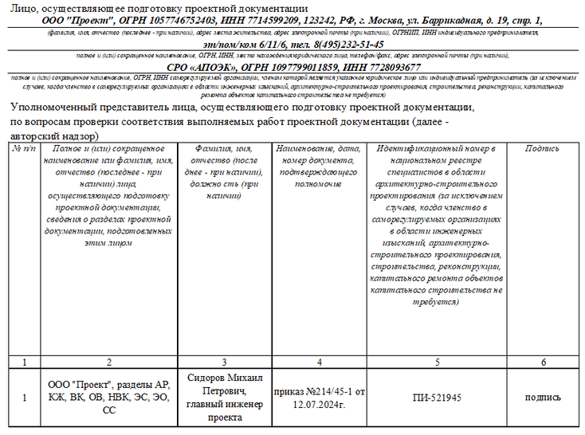
Установить авторский надзор в обязательном порядке придется в трех ситуациях:
- Для опасных объектов (ст. 8 Закона № 116-ФЗ).
- При работах по сохранению объектов культурного наследия (ст. 45 Закона № 73-ФЗ).
- Для особо опасных, уникальных и технически сложных объектов.
В других случаях решение о необходимости авторского надзора принимает заказчик.
Графа «Сведения об экспертизе»
Если экспертиза проектной документации не нужна, раздел не заполняют. Экспертизу не проводят для объектов, где не требуют разрешение на строительство, и ряда других объектов (ч. 2 ст. 49 ГрК).
Как заполнить графу «Сведения об экспертизе»
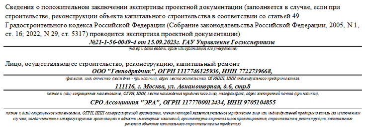
Графа «Лицо, которое осуществляет строительство»
Лицо, которое осуществляет строительство, — юрлицо или ИП, которые выполняют работы на объекте (ст. 52 ч. 3 ГрК). То есть это генподрядчик или подрядчик, если субпорядчиков нет. Если членство в СРО не требуют, представитель может не состоять в НРС. В этом случае ячейку с идентификационный номером оставляем пустой.
Как заполнить графу «Лицо, которое осуществляет строительство»
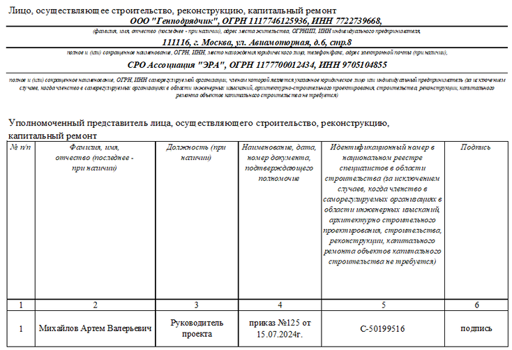
Материал к уроку (PDF)
Случаи, когда членство в СРО для застройщика не требуется
PDF получен с исходной страницы. Поля для названия организации и других персональных данных оставлены пустыми.
Графа «Представитель»
В графах 10–12 идут представители стройконтроля от застройщика или техзаказчика, от эксплуатационной организации и от лица, осуществляющего строительство.
Как заполнить графу «Представитель застройщика»
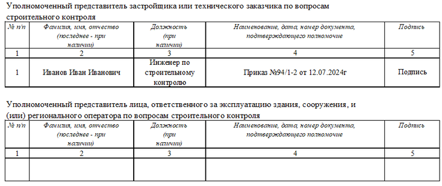
Представители стройконтроля должны состоять в национальном реестре строителей (НРС).
Как заполнить графу «Представитель лица, которое осуществляет строительство»

Сведения о субподрядчиках не заполняйте, если они отсутствуют.
Как заполнить графу «Другие лица»

Графа «Сведения о госстройнадзоре»
Эту графу заполняют, если на объекте проводят государственный строительный надзор. Если нет, то строки оставляют пустыми.
Как заполнить графу «Сведения о госстройнадзоре»
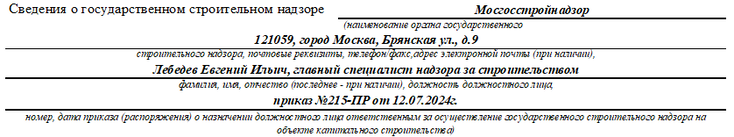
Графа «Общие сведения об ОКС»
В этой графе указывают краткие проектные характеристики: размеры в плане, этажность, высота, площадь застройки. Для линейных объектов — протяженность или мощность.
Как заполнить графу «Общие сведения об ОКС»

Графа «Начало и окончание работ»
Дата начала работ совпадает с первой датой в разделе 3 ОЖР. Дата окончания — последняя дата в разделе 3 ОЖР. Ее заполняют, когда закончили все работы. Количество страниц в журнале должно совпадать с надписью в конце журнала «прошито, пронумеровано ___ страниц».
Строку «В журнале содержится учет выполнения работ в период с... по...» заполняют, только если на объекте вели несколько журналов. Например, один закончили и начали второй. Тогда указывают даты работ, которые прописаны именно в этом журнале. Если журнал один, строку не заполняют. Печать застройщика или техзаказчика ставят, если ОЖР на бумажном носителе.
Как заполнить графу «Начало и окончание работ»

Графа «Регистрационная надпись»
Регистрационную надпись заполняют сотрудники госстройнадзора, когда получают журнал на регистрацию. Если госстройнадзор не проводили, графа остается пустой.
Как заполнить графу «Регистрационная надпись»
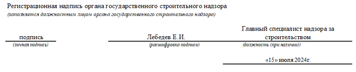
Графа «Сведения об изменениях»
В таблицу вносят данные, если появилась необходимость изменить титульный лист. Например, поменялся представитель, либо предыдущий представитель уволился.
Как заполнить графу «Сведения об изменениях»
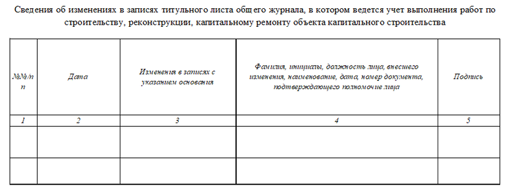
Какие заполнить основные разделы ОЖР
Раздел 1. В него заносят представителей инженерно-технического персонала, генподрядчика и субподрядных организаций. В столбике 6 расписывается представитель лица, осуществляющего строительство. Тот, которого указали в титульном листе.

Раздел 2. Здесь указывают все журналы на объекте. Например, журнал входного контроля материалов, журнал бетонных работ, журнал сварочных работ. После передачи журнала заказчику в столбце 4 ставится дата передачи, в столбце 5 — подпись представителя заказчика.

Раздел 3. Это основной раздел ОЖР, в который вносят данные о выполненных работах.
В столбце 4 при описании работ обязательно укажите:
- методы выполнения работ,
- сведения о проведенных испытаниях,
- конкретное место выполнения работ: оси, отметки, этажи, секции,
- наименование конструкций, инженерных систем,
- строительные материалы, изделия и конструкции, оборудование.
В столбце 3 напишите погодные условия, дневной/ночной режим работы и прочее. Например, работа в охранной зоне или в стесненных условиях.
Материал к уроку (PDF)
Основные правила заполнения раздела 3 ОЖР
PDF получен с исходной страницы. Поля для названия организации и других персональных данных оставлены пустыми.

Раздел 4. В раздел 4 ОЖР вносят данные о стройконтроле, который провел застройщик или техзаказчик. Данные вносит тот, кто проводил контроль.

Раздел 5. В раздел 5 ОЖР вносят список исполнительной документации, которую подписали на объекте. Перечисляют акты в хронологическом порядке.

Раздел 6. В него вносят сведения о проведении госстройнадзора, если требуется. Заполняет представитель госстройнадзора.
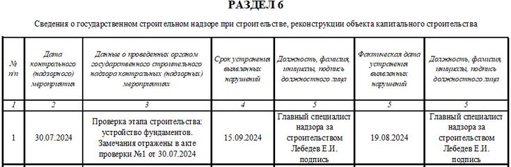